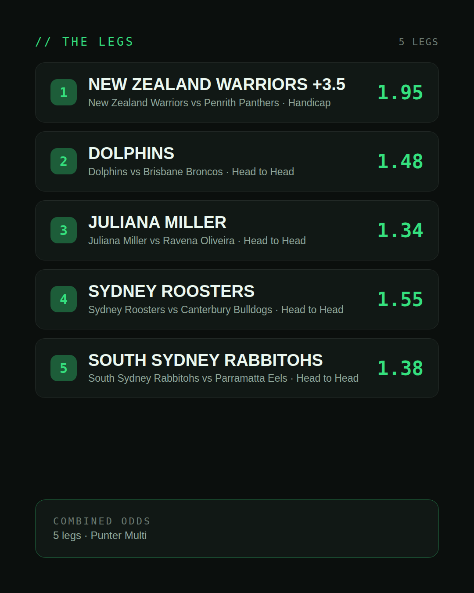
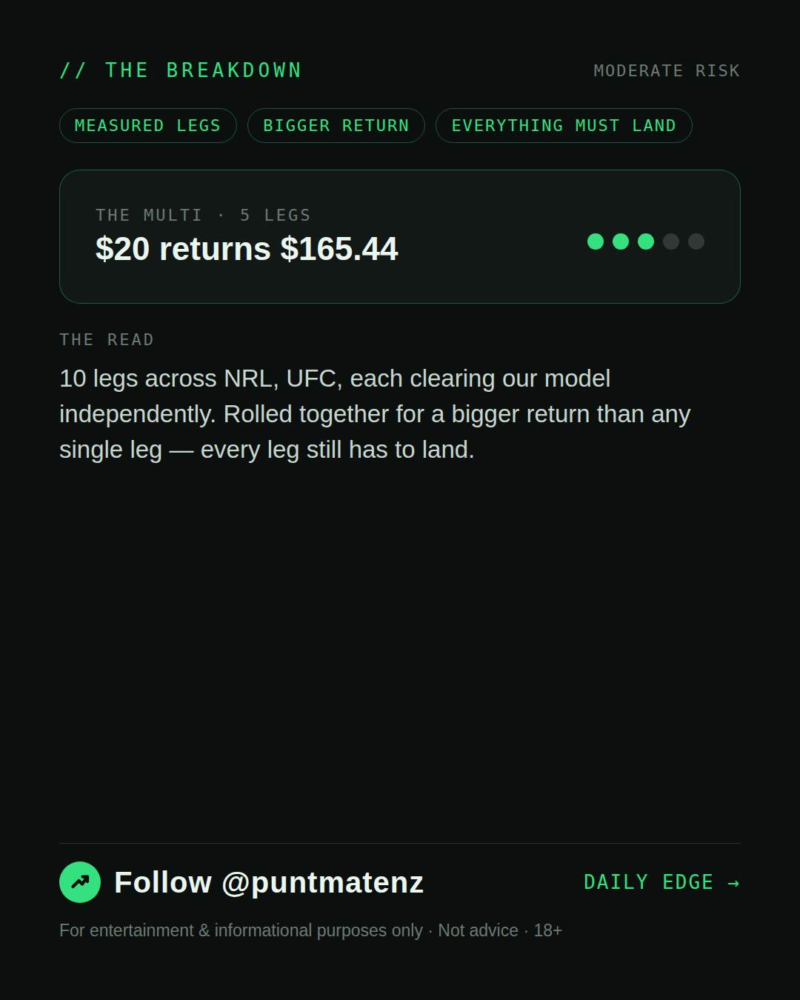

*🎯 PUNTMATE NZ — THE PUNTER'S MULTI* _A measured one: today produced multiple selections that each stand on their own as Investor/Punter-tier picks. Rolled together they pay well beyond any single leg — every leg still has to land, so this is a bigger swing than the day's single pick, not a certainty._ *Leg 1:* New Zealand Warriors vs Penrith Panthers — NEW ZEALAND WARRIORS +3.5 @ 1.95 (Handicap) *Leg 2:* Dolphins vs Brisbane Broncos — DOLPHINS @ 1.48 (Head to Head) *Leg 3:* Juliana Miller vs Ravena Oliveira — JULIANA MILLER @ 1.34 (Head to Head) *Leg 4:* Sydney Roosters vs Canterbury Bulldogs — SYDNEY ROOSTERS @ 1.55 (Head to Head) *Leg 5:* South Sydney Rabbitohs vs Parramatta Eels — SOUTH SYDNEY RABBITOHS @ 1.38 (Head to Head) *Leg 6:* Louie Sutherland vs Jose Montanha — LOUIE SUTHERLAND @ 1.55 (Head to Head) *Leg 7:* Manoel Sousa vs Richie Miranda — MANOEL SOUSA @ 1.38 (Head to Head) *Leg 8:* Cheyanne Bowers vs Elora Dana — CHEYANNE BOWERS @ 1.28 (Head to Head) *Leg 9:* Valentin Moldavsky vs Bruno Cappelozza — VALENTIN MOLDAVSKY @ 1.24 (Head to Head) *Leg 10:* Steven Asplund vs Guilherme Pat — STEVEN ASPLUND @ 1.37 (Head to Head) *Combined: 38.47* *BET TYPE: PUNTER* One leg fails, the lot fails. ────────────────── ⚠️ For entertainment & informational purposes only. Not advice. 18+.
(see per-tier text above — no single Instagram caption for a weekend-multi-only post)
| has_pick | False |
| is_weekend_multi | True |
| pick_id | 2026-08-07_weekend_multi |
| post_date | 2026-08-07 |
| run_id | 31135382908 |
| generated_at | 2026-08-07T00:42:39.470686+00:00 |
| workflow_state | GENERATED |
| has_punter_multi | True |
| punter_multi_carousel_paths | ['data/review/2026-08-07_weekend_multi/punter_multi_cover.png', 'data/review/2026-08-07_weekend_multi/punter_multi_legs.png', 'data/review/2026-08-07_weekend_multi/punter_multi_breakdown.png'] |
| punter_multi_carousel_urls | ['https://raw.githubusercontent.com/kingofthecastle24/puntmate/main/data/cards/2026-08-07_Weekend_Multi_night_punter_multi_1_cover.png', 'https://raw.githubusercontent.com/kingofthecastle24/puntmate/main/data/cards/2026-08-07_Weekend_Multi_night_punter_multi_2_legs.png', 'https://raw.githubusercontent.com/kingofthecastle24/puntmate/main/data/cards/2026-08-07_Weekend_Multi_night_punter_multi_3_breakdown.png'] |
| has_gambler_multi | False |
| has_degenerate_multi | False |
| intended_platforms | ['instagram_feed', 'telegram'] |